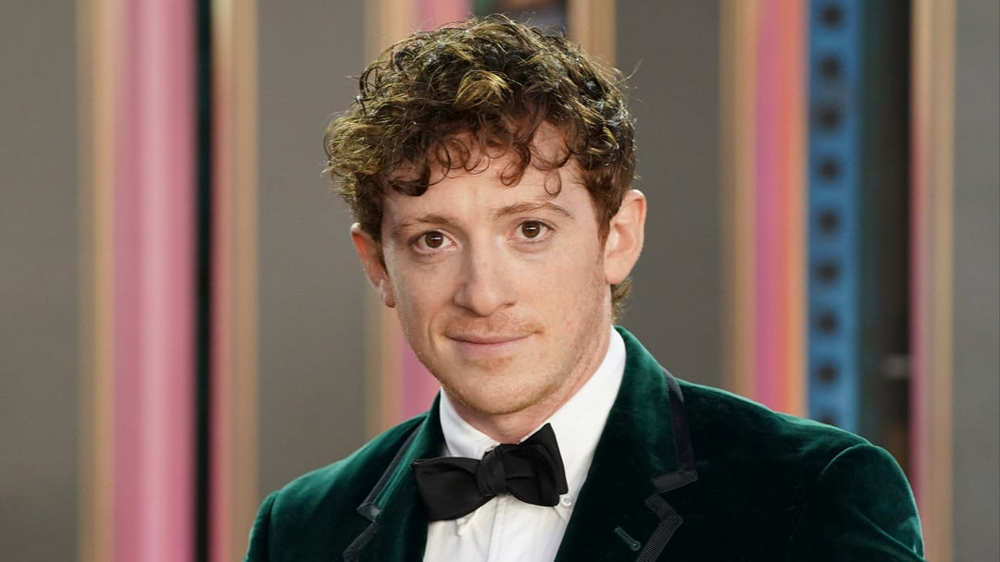

Ethan Slater
Born: 02 June 1992
Age:
Years Active: 2012–present
Genre/s: Musical Theater, Indie Folk, Pop, Pop-Rock
Label/s: Republic, Verve, Masterworks Broadway, Broadway, Soundcat, FX / 20th Century Fox
Ethan Samuel Slater (born June 2, 1992) is an American actor and singer. He played the character of SpongeBob SquarePants in the 2016 musical of the same name, for which he won a Drama Desk Award and received a nomination for the Tony Award for Best Actor in a Musical. He played Boq Woodsman / The Tin Man in the musical films Wicked (2024) and Wicked: For Good (2025). As a singer, he has released the extended plays Wanderer (2019) and Life Is Weird (2020).
Ethan Samuel Slater was born on June 2, 1992, in Washington, D.C. He is the third child of Jay Slater, an employee at the Food and Drug Administration. He is Jewish and was raised Conservative, attending Ohr Kodesh in Silver Spring. After attending Charles E. Smith Jewish Day School, his family moved to Silver Spring, Maryland. Slater's mother died when he was 7, which he describes as a "really big, formative thing in my life. She had left this huge imprint on me, even though I had so few memories."
Slater graduated from Georgetown Day School in Washington, DC, and studied drama at Vassar College in Poughkeepsie, New York. During his time in college, he auditioned to apprentice at a Shakespeare workshop, which then got him an audition in front of director Tina Landau. Slater graduated from Vassar with a Bachelor of Arts degree in Drama in 2014.